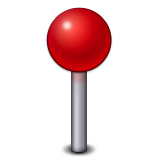
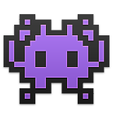

I'm a designer / urbanist / storyteller*
*I design spaces. I design things. I tell stories. I create experiences.
Based in Toronto, Canada, I'm an interdisciplinary Experiential Designer for the Creative Studio at FORREC Ltd, creating experiences that ignite play  , curiosity  , and happiness
, and happiness  .
.
I strive for thoughtful, meaningful design in a digital age.
I'm a big believer that design is universal. Wherever and whatever it is that we're designing, the goal is always the same: to create a meaningful experiences. As a designer, I draw from a wide range of media to simply create opportunities to engage with these experiences .
Outside of my job, I have a passion for youth-engagement and education centered on creative thinking. I am the co-founder of Studio Bud, a creative initiative and agency that enables blue-sky ideation in Millennials to inspire innovation in the community. We help organizations think differently, by thinking freely; just like a kid. This project emerged from my work in the 2015 cohort of Ryerson University's Master of Digital Media program.
Interested in working together? Let's talk! Connect at jamiemkwan[at]gmail.com
A Work In Progress
- 2014 - 2015 Master of Digital Media (MDM), Ryerson University
- 2009 - 2013 Bachelor of Architectural Science (BArchSc), Ryerson University
- 2015 - present Designer, FORREC Ltd.
- 2015 - present Co-Founder, Studio Bud
- 2015 - 2015 Research Assistant (Dr. Ali Mazalek, CRC Digital Innovation), Synaesthetic Media Lab
- 2014 - 2015 Strategy & Growth, Bodhi Collective
- 2013 - 2014 Junior Architect, SUSTAINABLE.TO Architecture + Building
- 2013 - 2013 Graphic Design Intern, Mary Chong Graphic Design
- 2013 - 2013 Special Projects Coordinator, IIDEX Canada
- 2012 - 2013 Research Assistant (Dr. Hua Ge, PEng - Building Science), Ryerson University
- 2007 - 2012 Teaching / Programs Assistant, Royal Ontario Museum
- Apr 2016 SHSM Communications Workshop (Heroes in Black), Ryerson University, Toronto [Studio Bud Creative Workshop]
- Apr 2016 "Immersive and Multisensory Experiences", Museums & the Web Conference (MWXX), Los Angeles [Speaking]
- Apr 2016 "Sensing Context: Reflexive Design Principles for Intersensory Interactions", MWXX'16 [Co-Authored Paper]
- Feb 2016 "Grasping Cultural Context through Multisensory Interactions", Proceedings of the TEI'16 [Co-Authored Paper]
- Apr 2015 NEET Youth Incubator #IdeaJam15 (Community Innovation Lab), Oshawa [Studio Bud Creative Workshop]
- Sept 2015 "Disrupting Design: Emerging Digital Mediums", George Brown College, Toronto [Speaking]
- Apr 2015 District.TO Pilot Project (Canon Canada, SupaMassai Foundation), Ryerson University, Toronto [Studio Bud Creative Workshop]
- Mar 2015 Canon: Through Your Lens Pitch Competition, Communitech, Kitchener [Presentation/Competition]